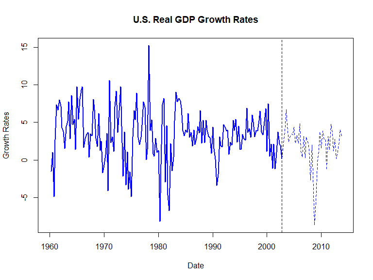
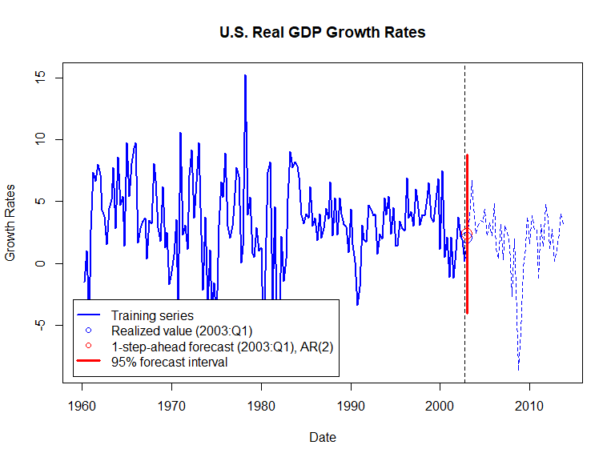

Based on Stock and Watson, ch. 15
Forecasts are inherently uncertain and error ridden
Good model selection minimize forecast errors, but does not eliminate them: report forecast uncertainty
In practice, summary measures of forecast uncertainty are based on the Mean Squared Forecasting Error (\(MSFE\))
\[MSFE = E[Y_{T+1} - \hat{Y}_{T+1|T}]\]
The MSFE is unkown and must be estimated.
The pre-recorded lecture discusses three ways of estimating the \(MSFE\) (here we consider R-implementation)
An estimate of the \(MSFE\) should be reported alongside the forecast: A forecast interval gives a range of forecasts
A forecast interval is a good way of conveying forecast uncertainty: wider intervals indicate greater uncertainty
A 95% forecast interval contains the future value of the forecasted variable in 95% of repeated applications
A forecast interval is like a confidence interval, but refers to the value of the forecasted variable (not a population coefficient)
Unlike confidence intervals, however, forecast intervals are typically based on an assumption of normal errors
(Distribution of OLS estimator \(\hat{\beta}\) is well approximated by normal distribution in large samples, even when errors are non-normal; that is not the case for a forecast \(Y_{T+1}\))
Stationary \(Y \sim AR(p)\)-model w/ iid normal errors:
\[Y_t = \beta_0 + \beta_1 Y_{t-1} + \beta_2 Y_{t-2} + \ldots + \beta_p Y_{t-p} + u_t\]
where \(u_t \sim \mathcal{N}(0,\sigma_u^2)\).
Using \((Y_t; t=1,2,\ldots,T)\) estimate the model by OLS
The forecast error
\[\begin{multline} Y_{T+1} - \hat{Y}_{T+1|T} = u_{T+1} - [(\hat{\beta}_0 - \beta_0) \, + \\ (\hat{\beta}_1 - \beta_1) Y_{T} + \ldots + (\hat{\beta}_p - \beta_p) Y_{T-p+1}] \end{multline}\]
follows a 0-mean normal distribution w/ variance \(MSFE\)
Since \(Y_{T+1} - \hat{Y}_{T+1|T} \sim \mathcal{N}(0, MSFE)\), it is the case that
\[P\left[|Y_{T+1} - \hat{Y}_{T+1|T}| < 1.96 \sqrt{MSFE}\right] = 0.95\]
It follows that the 95% forecast interval for \(Y_{T+1}\) is
\[\left[ \, \hat{Y}_{T+1|T} - 1.96 \sqrt{\hat{MSFE}}, \hat{Y}_{T+1|T} + 1.96 \sqrt{\hat{MSFE}} \, \right]\]
where \(\hat{MSFE}\) estimates \(MSFE\) (pre-recorded lecture)
A 95% forecast interval contains \(Y_{T+1}\) in 95% of repeated applications: wider intervals indicate greater uncertainty
# load US macroeconomic data
usmac_qt <- read_xlsx("us_macro_quarterly.xlsx", sheet = 1, col_types = c("text", rep("numeric", 9)))## New names:
## * `` -> ...1# Fix format of date
usmac_qt$...1 <- as.yearqtr(usmac_qt$...1, format = "%Y:0%q")
# Relabel column names in dataframe
colnames(usmac_qt) <- c("Date", "GDPC96", "JAPAN_IP", "PCECTPI",
"GS10", "GS1", "TB3MS", "UNRATE", "EXUSUK", "CPIAUCSL")
# GDP series as xts object
GDP <- xts(usmac_qt$GDPC96, usmac_qt$Date)["1960::2013"]
# GDP growth series as xts object
GDPGrowth <- xts(400 * log(GDP/lag(GDP)))
# Training data
GDPGrowth.train <- na.omit(GDPGrowth["1960::2002"]) 
Suppose GPD growth follows \(AR(2)\)-model w/ iid errors:
\[GDPGR_t = \beta_0 + \beta_1 GDPGR_{t-1} + \beta_2 GDPGR_{t-1} + u_t\]
where \(E[u_t|GDPGR_{t-1}, GDPGR_{t-2}, ...] = 0\)
Estimate model by OLS using \((GDPGR_t;t=1,2,...,T)\)
Suppose further that \(u_t \sim \mathcal{N}(0,\sigma_u^2)\), so the 95% forecast interval for \(GDPGR_{T+1}\) is
\[\begin{equation*} \small \left[ \, \widehat{GDPGR}_{T+1|T} - 1.96 \sqrt{\widehat{MSFE}}, \widehat{GDPGR}_{T+1|T} + 1.96 \sqrt{\widehat{MSFE}} \, \right] \end{equation*}\]
# Estimate AR(2) model for US GDP growth
ar2 <- dynlm(ts(GDPGrowth.train) ~ L(ts(GDPGrowth.train)) + L(ts(GDPGrowth.train), 2))
summary(ar2)##
## Time series regression with "ts" data:
## Start = 3, End = 171
##
## Call:
## dynlm(formula = ts(GDPGrowth.train) ~ L(ts(GDPGrowth.train)) +
## L(ts(GDPGrowth.train), 2))
##
## Residuals:
## Min 1Q Median 3Q Max
## -10.6623 -1.7626 -0.0594 1.9502 12.9331
##
## Coefficients:
## Estimate Std. Error t value Pr(>|t|)
## (Intercept) 1.97146 0.39513 4.989 1.52e-06 ***
## L(ts(GDPGrowth.train)) 0.24888 0.07665 3.247 0.00141 **
## L(ts(GDPGrowth.train), 2) 0.16723 0.07624 2.193 0.02967 *
## ---
## Signif. codes: 0 '***' 0.001 '**' 0.01 '*' 0.05 '.' 0.1 ' ' 1
##
## Residual standard error: 3.275 on 166 degrees of freedom
## Multiple R-squared: 0.1152, Adjusted R-squared: 0.1045
## F-statistic: 10.8 on 2 and 166 DF, p-value: 3.881e-05# Produce one-step ahead forecast of GDP growth
T <-length(GDPGrowth.train) # Length of observed series
fcast.ar2 <- ar2$coefficients %*% c(1, GDPGrowth.train[T], GDPGrowth.train[(T-1)])
fcast.ar2 # Print to console## [,1]
## [1,] 2.340301# Produce 95% forecast interval for US GDP growth
lb <- fcast.ar2 - 1.96*summary(ar2)$sigma
ub <- fcast.ar2 + 1.96*summary(ar2)$sigma
c(lb, ub)## [1] -4.078784 8.759385
Forecasts are inherently uncertain and error ridden; always report measures of forecast uncertainty along with the forecast
In practice, summary measures of forecast uncertainty are based on the Mean Squared Forecasting Error (\(MSFE\))
A 95% forecast interval contains the future value of the forecasted variable in 95% of repeated applications
Report the estimated \(MSFE\), or better yet, a forecast interval